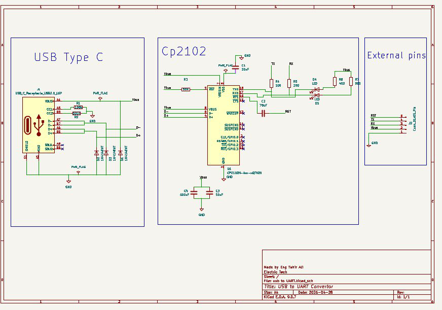
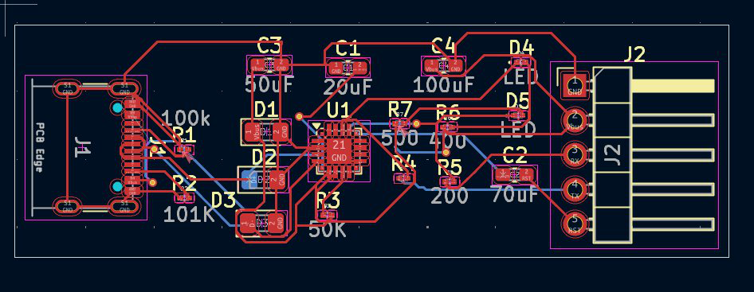

U3 — USB Interface Board
USB to UART Converter Board
KiCad · CP2102 · USB Type-C
KiCadCP2102USB-CESD ProtectedDRC/ERC Verified


Overview
A compact bridge board built around the CP2102 USB-to-UART chip, with a USB Type-C receptacle on the input side and a clean 5-pin header on the output. The design keeps the footprint small while still protecting the data lines and giving a visual read on traffic through onboard TX/RX status LEDs.
A 100k/101k resistor divider network conditions the signal path, and the layout was taken through a full DRC/ERC pass before Gerber export, so it drops straight into fabrication without rework.
Key Features
- USB Type-C receptacle connector for the host side
- CP2102 USB-to-UART bridge chip
- ESD protection diodes on both data lines
- TX / RX status LED indicators
- 5-pin output header: 3.3V / 5V / TX / RX / GND
- 100k / 101k resistor divider network
- Compact, clean two-layer layout
- DRC and ERC verified clean before fabrication
Build Spec
ToolKiCad
Bridge ICCP2102
ConnectorUSB Type-C
Output5-Pin Header
ProtectionESD diodes on D+/D-
IndicatorsTX / RX LEDs
VerificationDRC + ERC clean
Fab ReadyJLCPCB / PCBWay / OSHPark